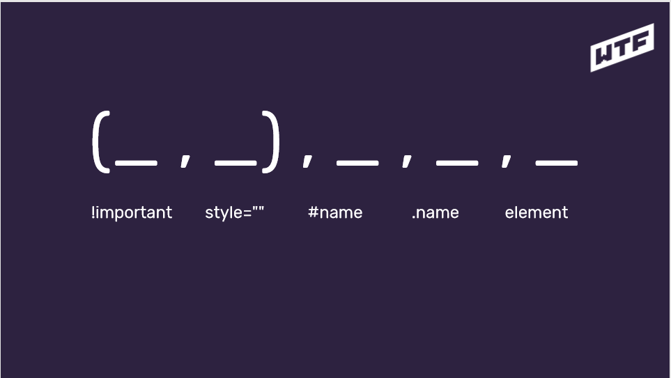
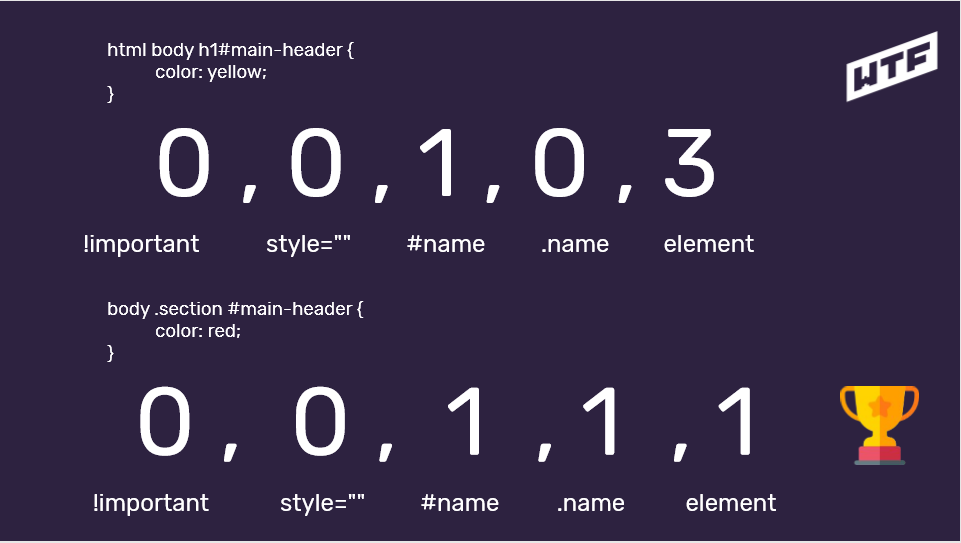
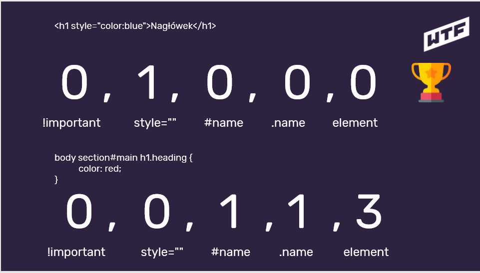

Lekcja 1: Co to jest CSS?
Pierwsze selektory i stylowanie strony
CSS = Cascading Style Sheets:
- odpowiada za prezentację
-
wpływa na wygląd elementów HTML na ekranie, wydrukach, itp.
- składnia CSS to reguły
Budowa reguły:
selektor {
właściwość: wartość;
}
Jak dołączyć plik css?
- Znacznik style wewnątrz head'a
-
Podlinkowanie pliku stylów do html
<link href="" rel="stylesheet" type="text/css" >
-
Inline style - o tym więcej w
lekcji nr 2
Lekcja 2: Klasy, identyfikatory i specyficzność
Style CSS można też dołączać w znacznikach HTML - choć jest to zła
praktyka.
<zniacznik style="color:yellow;">treść</znacznik>
Selektory wyboru:
- klasy - .nazwa-klasy
- identyfikatora - #nazwa-id
!important nadpisuje każdy styl, np: color:blue !important;
Specyficzność w CSS - klasyfikacja medalowa

Oto kilka przykładów:


Rekomendowane jest dodawanie klas do wszystkich elementów i
unikanie zagnieżdżeń.
Nazewnictwo klas:
-
używaj pojedynczych słów z j.angielskiego
-
nazywaj rzeczy zgodnie z ich funkcją na stronie
- startuj z małej litery
- nie zaczynaj od cyfr
-
jeśli musisz użyć dwóch słów użyj tzw. kebab-case
-
staraj się, żeby element miał jedną klasę (nie zwiększaj
sepcyficzności bez potrzeby)
Podsumowanie:
- html class="name" = css .name
- html id="name" = css #name
-
stylujemy po klasach (bez zagnieżdżeń)
-
nazwy klas po angielsku zgodnie z przeznaczeniem
-
tworzymy klasy nawet jeśli mamy jeden element danego typu
- specyficzność może dać popalić
-
nie używamy !important i stylów inline'owych
Lekcja 3: Box Model
Życie w pudełku
< div > używamy tylko i wyłącznie, gdy chcemy
coś "opakować" tzn. nie istnieje odpowiedni semantyczny znacznik
Właściwość display:
-
display: block; - elementy ustawiają się pod sobą,
możemy określić wymiary boxa
-
display: inline; - elementy ustawiają się obok
siebie, zajmują tyle miejsca co ich treść, nie możemy ustawić
wymiarów boxa
-
display: inline-block; - elementy ustawiają się
obok siebie, ale tym razem możemy nadać wymiary boxowi
-
display: auto - jeśli treść nie mieści się w boxie,
to automatycznie jest dodawany scroller
Do ustawiania wymiarów boxa można korzystać z bardzo użytecznyxch
właściwości: min-width & max-width.
overflow: hidden; - pozwala na ukrywanie treści,
która nie mieści się w boxie
Box model:
- margin
- border
- padding
- content
border-radius: __px; - zaokrągla rogi ramki
margin: __px auto; - wyśrodkowuje box, ale pod
warunkiem, że element ma już ustaloną szerokość
box-sizing: content-box; - domyślnie, nie uwzględnia
paddingu i marginesów w szerokości i wysokości
box-sizing: border-box; - uwzględnia paddingu i
marginesów w szerokości i wysokości
Pozycjonowanie:
-
position: static; - domyślnie
-
position: relative; - pozycjonowanie względem
wybranego elementu
-
position: absolute; - pozycjonowanie wzgledem okna
przeglądarki, nie ma szerokości tak jak inline
-
position: fixed; - działa podobnie do absolute,
tylko jest przyklejony do strony
-
position: sticky; - jest przyklejony, ale tylko w obrębie
danego elementu
Float - nie służy do budowania layotów, tylko do opływania
elementów, gdy nie ma wysokości to sprawia straszne problemy, gdyż
nie widzi innych elementów
clear: both; - służy do czyszczenia floata
Lekcja 4: Metodologia BEM
Block__Element--Modifier
Rozwinięcie skrótu BEM wraz z definicjami
- Block - element nadrzędny
-
Element - część bloku (nie musi być bezpośrednim dzieckiem)
-
Modifier - modyfikator, jeśli element występuje w kilku
wariacjach tworzymy dodatkową klasę
Przykład:
<div class="hand">
<div class="hand__finger hand__finger--thumb"></div >
<div class="hand__finger"></div >
<div class="hand__finger"></div >
<div class="hand__finger"></div >
<div class="hand__finger hand__finger--pinky"></div >
</div >
Podsumowanie:
-
szukamy elementów na stronie i dzielimy ją na bloki
-
myślimy o elementach składowych/robumy analizę-selekcję
-
tworzymy dwie klasy jeśli element ma modyfikator (w
modyfikatorze zmieniamy tylko unikalne dla niego wartości, nie
przypisujemy rzeczy z klasy bazowej